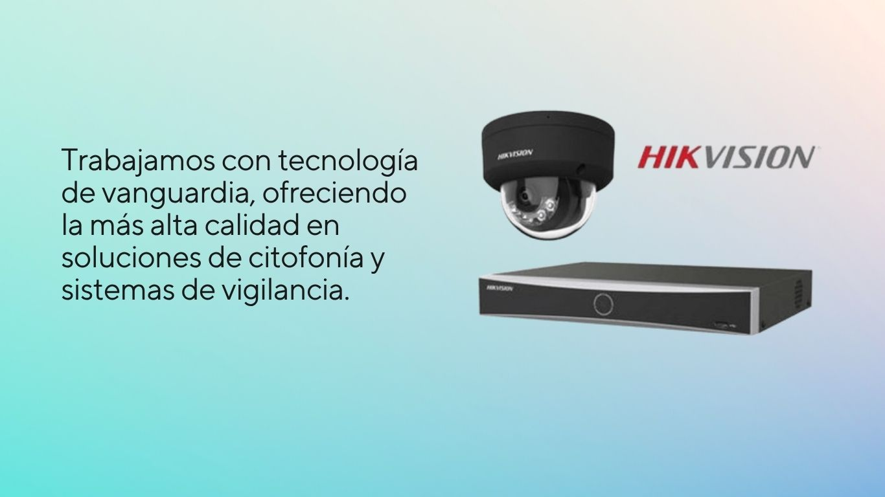
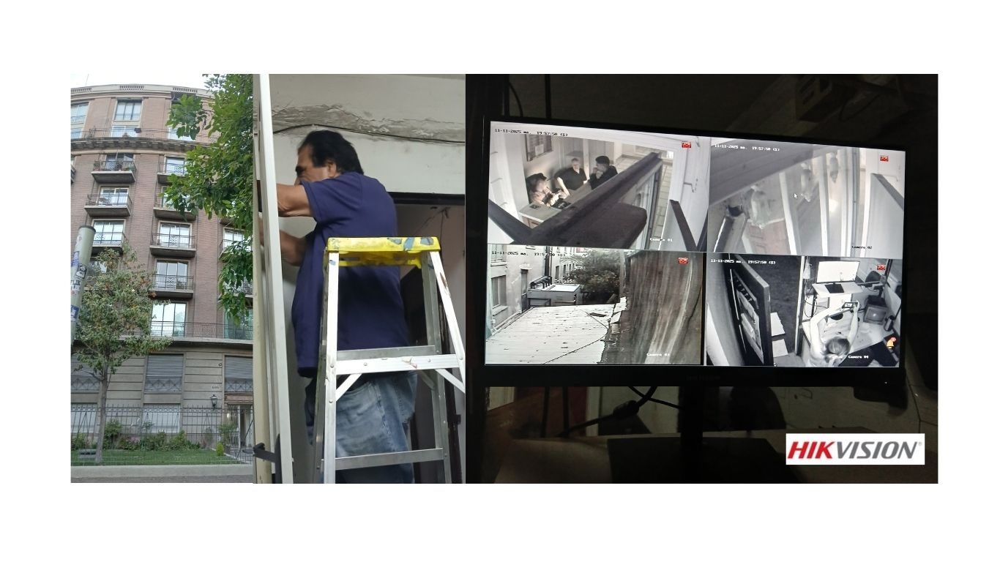

Somos una pyme familiar con más de 35 años de experiencia en la instalación de sistemas de citofonía y cámaras de seguridad en Chile. Nos especializamos en soluciones de vigilancia, control de acceso y soporte técnico, brindando desde 1985 un servicio confiable y profesional para hogares, condominios y empresas.
Desarrollamos proyectos de instalación de cámaras de seguridad, sistemas de citofonía y control de acceso para todo tipo de clientes. Ofrecemos soluciones tanto para viviendas particulares y locales comerciales, como para condominios, pymes y empresas, adaptándonos a cada necesidad. Solicita una cotización de sistemas de vigilancia y seguridad con nuestro equipo especializado.

Nuestros clientes nos eligen por nuestro servicio profesional en instalación y mantenimiento de cámaras de seguridad, sistemas de vigilancia y citofonía, destacando por un trabajo honesto, responsable y de alta calidad.
Un ejemplo es el Edificio Miraflores, en el sector Bellas Artes (Santiago), donde realizamos la instalación de un sistema DVR y monitoreo de cámaras Hikvision de última generación. El sistema anterior presentaba fallas debido a un mal cableado y falta de mantención, lo que comprometía la seguridad del edificio.

Cotiza tu proyecto a través de nuestros canales de comunicación.
Nuestros técnicos especializados te ayudarán a responder todas tus dudas